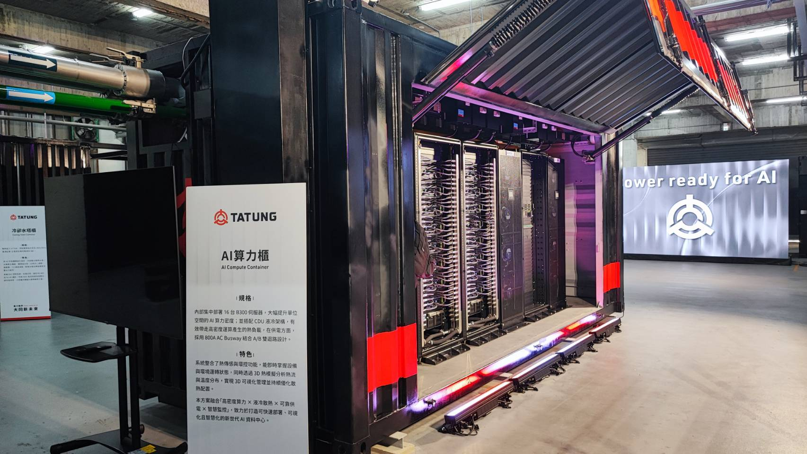
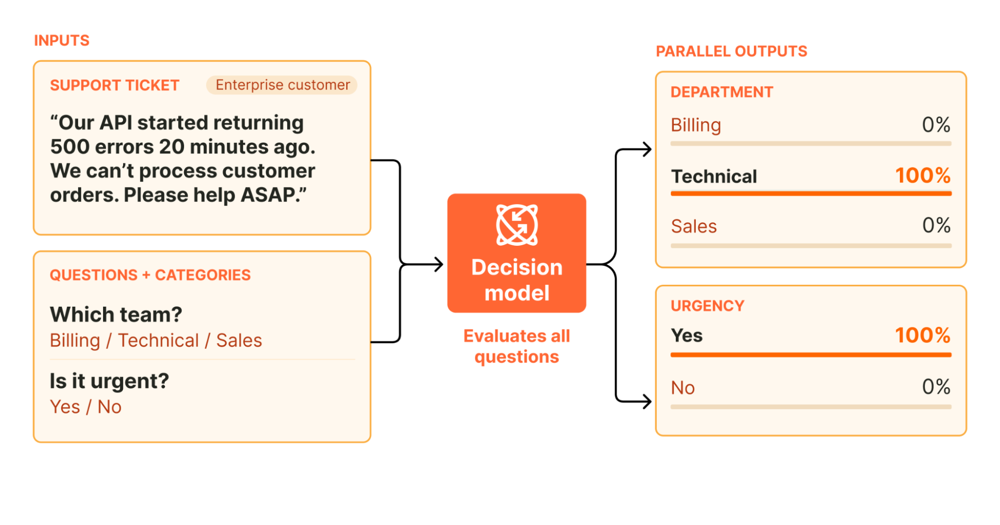

科技產品 T1
Bose 官方新品照片：Noise Cancelling Wired Earbuds。 Bose 官方 pressroom
Bose 推出 USB-C 有線降噪耳機，開放預購並預定 10 月 15 日出貨
發佈時間
Bose｜Noise Cancelling Wired Earbuds
Bose 發表 99 美元 USB-C 有線耳機，以連接裝置供電並提供主動降噪，省去藍牙配對與耳機電池充電。
- 四個麥克風支援 Quiet、Aware 與關閉降噪三種模式。
- 官方列出黑色、白色及限量薄荷綠，預定 10/15 出貨。
完整報告收合報告
事件背景與影響
把即插即用與降噪結合，提供無線耳機之外的選擇；實際使用仍須確認裝置 USB 音訊相容性。
事件與發佈依據
Bose 9/28 新品新聞稿，當日開始 My Bose 專屬預購；10/15 是預定出貨日，並非本次發布日。
收錄紀錄
僅比對 9/21 至 10/4 的 14 份日報，Bose／產品名称無命中；首次收錄。
尚待確認
售價為美國公告價格；不推論台灣售價或到貨日，降噪表現仍待獨立測試。
相關實體與概念
Bose、USB-C、ANC、有線耳機
科技產品 T2

大世科官方發布的 TTG AIDC CUBE 算力機櫃照片。 大世科官方新聞發布
大同發表 TTG AIDC CUBE，以預製模組整合電力、冷卻與 AI 算力
發佈時間
大同／大世科｜TTG AIDC CUBE
大同集團發表預製模組化 AI 機房方案，把供電、備援、散熱、監控與算力部署整合，以 180 天算力落地為交付目標。
- 大同負責高壓電力、UPS 與液冷／氣冷工程，大世科負責算力與維運整合。
- 採模組化架構，可依場域與後續需求擴充。
完整報告收合報告
事件背景與影響
企業導入 AI 需要同步處理電力與散熱，整合方案可減少多套工程協調；交付期限仍依場地、規模與合約而異。
事件與發佈依據
大世科官方文章明示「今（30）日發表」，頁面活動起日為 9/30；未將活動欄 16:30 視為首次發布時刻。
收錄紀錄
14 份日報查 TTG AIDC CUBE／大同均無命中；首次收錄的獨立解決方案。
尚待確認
180 天為廠商提出的部署目標，不等於所有客戶已完成交付；可靠度與效能須核對實際驗證範圍。
相關實體與概念
大同、大世科、AI 資料中心、UPS、液冷
科技產品 T3
Acumatica 2026 R2 正式供應，新增內嵌 AI、資料倉儲與 MCP 連線
發佈時間
Acumatica｜2026 R2 Cloud ERP
Acumatica 正式推出 2026 R2 雲端 ERP，加入日常流程中的 AI 功能、原生資料倉儲與 MCP 連線，讓企業工具使用受治理的 ERP 資料。
- AI Assistant／AI Automation 支援問答、異常辨識與工作流程。
- 新版將客戶轉至現代化使用介面，提供資料倉儲與 MCP 接入。
完整報告收合報告
事件背景與影響
獨立分析資料可減少報表與交易作業爭用資源；MCP 連線可沿用角色權限及欄位遮蔽，仍須做好存取設定。
事件與發佈依據
官方 10/1 新聞稿明示 general availability，發布日位於凍結科技窗內。
收錄紀錄
14 份日報查 Acumatica／ERP MCP／Native Data Warehouse 無命中；首次收錄。
尚待確認
公告不代表每個客戶已部署所有功能；權限、升級與模組適用範圍需依實際環境確認。
相關實體與概念
Acumatica、ERP、MCP、資料治理
科技產品 T4

Cloudflare 官方決策流程示意圖，非硬體或事件照片。 Cloudflare 官方發布文章
Cloudflare 開源 Clef 與 Clef-flash，讓 AI 工作流程直接取得決策機率
發佈時間
Cloudflare｜Clef、Clef-flash、Workers AI
Cloudflare 推出 Clef 與 Clef-flash 決策模型，讀取輸入及預先定義的答案，回傳各選項的機率，供工作流程分類、路由或升級處理。
- 兩款模型已在 Workers AI 供應，亦公開可在本地執行的權重。
- 官方同步宣布可依自有資料微調的強化學習平台。
完整報告收合報告
事件背景與影響
固定格式結果可減少自由文字解析，但決策機率仍需以實際資料校準，不代表自主執行必然安全或正確。
事件與發佈依據
Cloudflare 10/1 changelog 明示兩款模型當日起在 Workers AI 可用，模型權重採 Apache 2.0 開源。
收錄紀錄
14 份日報查 Clef 無命中；10/3 收錄的 Strands Decider 是不同廠商的模型，不是同一發布事件。
尚待確認
效能比較屬廠商測試；敏感或高風險決策仍需設計驗證、人工介入及稽核。
相關實體與概念
Cloudflare、Clef、Workers AI、decision models
科技產品 T5
Amazon 將多通路銷售管理整合進 Seller Central，串接外部平台訂單
發佈時間
Amazon｜Seller Central Multichannel Selling
Amazon 新增 Multichannel Selling 工具，讓賣家在 Seller Central 管理 Walmart、eBay、TikTok Shop 與 Shopify 的目錄、訂單及庫存。
- 官方回顧明確列出四個外部銷售通路及目錄、訂單、庫存管理。
- 與既有單純代出貨的服務不同，本次新增的是 Seller Central 多通路管理工具。
完整報告收合報告
事件背景與影響
集中管理可減少跨平台作業，但各平台連線條件與實際開放範圍仍須個別確認，不能推定全球商家同步可用。
事件與發佈依據
Amazon 9/29 Accelerate 官方回顧確認當月會議推出新工具；未把 10/2 媒體介紹日期當成新品日期，也未虛構首次宣布時刻。
收錄紀錄
14 份日報查 Seller Central／Multichannel Selling／多通路無命中；首次收錄。
尚待確認
官方回顧未列出所有市場及帳號的啟用時間；不推論台灣帳戶可立即使用。
相關實體與概念
Amazon、Seller Central、Walmart、TikTok Shop、Shopify
科技產品 T6
OpenAI Node SDK 7.28.0 加入自訂語音建立與 agent session events 介面
發佈時間
OpenAI｜openai-node 7.28.0
OpenAI 官方 JavaScript／TypeScript SDK 新增 custom voice creation 與 agent session events 的 API 介面，讓開發者能以版本化 SDK 整合新增能力。
- 7.28.0 的 Features 段落列出兩項 API 新增。
- 發布紀錄連結到 #2858 與對應 commit，可追查變更。
完整報告收合報告
事件背景與影響
SDK 支援降低直接自行維護請求與型別的成本。新增介面仍需搭配帳號權限、服務可用性與文件驗證，不能把 SDK 發布視為所有帳號已取得語音建立資格。
事件與發佈依據
GitHub release notes 7.28.0 日期為 10/2；release 欄另顯示 10/4 18:22，兩者均在科技窗內，未猜時區。
收錄紀錄
14 份日報窄查無命中，同窗產品表無相同 SDK 變更；首次收錄。
尚待確認
版本日期與 GitHub 上架顯示日不同；權限與實際供應範圍需另核對。
相關實體與概念
OpenAI、Node.js、TypeScript、custom voice、agent sessions
科技產品 T7
ChatGPT Enterprise 將外掛與 marketplace 管理加入 Admin console
發佈時間
OpenAI｜ChatGPT Enterprise Admin console
ChatGPT Enterprise 工作區擁有者與管理員，現在可在 Admin console 管理 Plugins 和 Marketplaces，讓組織集中維護可用工具與外掛來源。
- Plugins 管理外掛，Marketplaces 管理工作區外掛 marketplace。
- Apps 仍在 Workspace settings，亦可經 Manage Legacy Apps 開啟。
完整報告收合報告
事件背景與影響
集中管理有助於把工具分發與公司權限設定放在同一管理流程。此功能調整入口，既有 app access controls 仍適用，管理員須分別核對工具與資料存取權限。
事件與發佈依據
官方 Enterprise release notes 的 October 1 段落，定位 Manage plugins and marketplaces in Admin console。
收錄紀錄
14 份日報窄查無命中，同窗表無此管理功能；首次收錄。
尚待確認
公告明確描述 Enterprise；不自行推論所有方案或地區同步開放。
相關實體與概念
OpenAI、ChatGPT Enterprise、Admin console、plugins、workspace permissions
全球焦點 1
巴西完成總統首輪投票，Lula 與 Flávio Bolsonaro 競逐進入計票
發佈時間
近1.59億名合格選民參與巴西選舉，現任總統 Lula 與參議員 Flávio Bolsonaro 為主要對手。投票所已關閉，結果仍須依正式計票確認。
- 任一候選人未過半，將在10/25進行決選。
- 本文不把稍後更新的票數加入凍結截點。
完整報告收合報告
事件背景與影響
拉丁美洲最大經濟體的方向將影響社會政策、貿易與外交；初步領先不等於當選。
事件與發佈依據
10/4 當地投票及關閉投票所；AP 投票報導與 DW 同日報導，僅取截點前已發生的投票階段。
收錄紀錄
前14份日報無同一投票事件；首次收錄。
尚待確認
滾動頁後來的計票更新不作本文數字；等待選務機關正式結果。
相關實體與概念
Brazil、Lula、Flávio Bolsonaro、presidential election
全球焦點 2
德國 Merz 到訪 Kyiv，宣布逾13億歐元援助與新的安全合作協議
發佈時間
德國總理 Merz 在 Kyiv 宣布約10億歐元軍援及3.5億歐元能源援助，另與烏方推進武器生產、採購和反無人機合作。
- 軍援包含遠程武器、作戰無人機及衛星技術。
- 15項協議總值逾85億歐元，不等同當日全部撥款。
完整報告收合報告
事件背景與影響
援助同時面向遠程防衛與冬季能源修復，實際交付時程將決定效果。
事件與發佈依據
10/4 Kyiv 到訪與記者會；AP／News4Jax 同日記錄實際宣布。
收錄紀錄
前14份日報無同一訪問與援助決定；首次收錄。
尚待確認
協議總額、援助包與已交付金額需分開；完整履約時程未公布。
相關實體與概念
Germany、Ukraine、Friedrich Merz、energy aid、drones
全球焦點 3
續報｜衣索比亞政府盟軍進入 Mekelle，TPLF 撤出區域首府
發佈時間
TPLF 宣布撤離 Mekelle，居民與消息人士確認政府盟軍進入首府。通訊逐漸恢復，但仍有搶掠與持續戰鬥疑慮。
- 機場與城市控制先後轉移。
- Tigray Peace Force 與聯邦部隊合作。
完整報告收合報告
事件背景與影響
城市控制权改變是戰事新階段；撤出首府未必代表戰爭結束。
事件與發佈依據
AP 10/4 證人確認盟軍進城；Reuters／AFP同日核對控制權，撤軍開始較早但確認在窗內。
收錄紀錄
2026-10-03已收錄軍隊逼近；今日新增首府易手、TPLF撤出與政府盟軍進城。
尚待確認
通訊限制影響驗證，區域控制與後續衝突仍會變動。
相關實體與概念
Ethiopia、Mekelle、TPLF、Tigray Peace Force
全球焦點 4
續報｜葉門政府宣布大規模行動，欲奪回胡塞控制區
發佈時間
葉門政府領導人 al-Alimi 宣布大規模軍事行動，目標為收復胡塞控制區；胡塞正於 Taiz 周邊推進並干擾通往 Aden 的道路。
- 政府呼籲國際社會提供支持。
- 政府軍另宣稱攻擊 Sanaa 與 Saada 目標。
完整報告收合報告
事件背景與影響
政策宣布擴大戰事目標，但仍須確認部隊是否已實際展開全面反攻。
事件與發佈依據
10/4 Presidential Leadership Council 主席宣布行動；AP同日專題對應該宣布段落。
收錄紀錄
2026-10-04已收錄胡塞對Aramco攻擊宣稱；今日新增政府正式宣布收復領土行動。
尚待確認
CTP／ISW 尚未觀察到全面攻勢，宣布不等同所有戰線已開始執行。
相關實體與概念
Yemen、Houthis、Taiz、Aden、Rashad al-Alimi
全球焦點 5
續報｜美軍將 RAF Fairford 所有轟炸機調回美國
發佈時間
美軍確認 RAF Fairford 的轟炸機已返回美國原基地，時值英國警方調查基地附近涉嫌恐攻計畫。
- 10/4 可觀察到 B-1 離開基地。
- 軍方未公開全部作戰安排。
完整報告收合報告
事件背景與影響
基地曾支援對伊朗任務；調動改變前沿部署，未表示美軍失去全球遠程打擊能力。
事件與發佈依據
AP／Live5News 10/4 17:07 EDT；五角大廈同日確認 redeployment。
收錄紀錄
2026-09-29已收錄基地案件保釋與調查；今日新增全部轟炸機返美的實際部署變更。
尚待確認
調動與安全案件的具體因果未完整公開，不能推定戰爭任務終止。
相關實體與概念
US Air Force、RAF Fairford、B-1、United Kingdom
全球焦點 6
續報｜Latvia 執政聯盟取得35%選票，開始籌組新政府
發佈時間
Latvia 親烏克蘭總理 Andris Kulbergs 的聯盟取得35%選票，議員準備組閣談判，仍需多黨合作才能治理。
完整報告收合報告
事件背景與影響
NATO 東翼國家的聯盟組成牽動防衛政策；得票領先尚不等同組閣完成。
事件與發佈依據
AP 10/4 10:25:01 UTC 報導計票與組閣階段。
收錄紀錄
2026-10-04已收錄投票；今日新增得票與組閣談判。
尚待確認
席次與聯盟安排仍待最終程序，本文不預設各黨同意合作。
相關實體與概念
Latvia、Andris Kulbergs、Saeima、coalition
全球焦點 7
Bosnia 舉行全國選舉，新電子驗票系統在部分投票所出現延誤
發佈時間
Bosnia 選民選出三人主席團與各級議員，首次使用電子身分識別及選票掃描，部分投票所因技術問題延後開始。
- 約340萬人有投票資格。
- 國家複雜的族群分權制度仍影響選舉與改革。
完整報告收合報告
事件背景與影響
新系統試圖降低舞弊風險，技術故障亦可能影響選民可及性與程序信任。
事件與發佈依據
10/4投票與AP現場觀察；僅採投票階段，不以頁面後續勝選聲明替代最終結果。
收錄紀錄
前14份日報無同一投票事件；首次收錄。
尚待確認
候選人自行宣稱勝選不等於正式認證；結果另待選務機關核實。
相關實體與概念
Bosnia、Milorad Dodik、electronic identification、EU
全球焦點 8
續報｜近1,500名遭 Malaysia 遣返者抵達 Myanmar，聯合國持續警告風險
發佈時間
近1,500名 Myanmar 公民從 Malaysia 返回 Yangon，聯合國與權利團體仍警告國內衝突下返回不安全。
- 這是總計5,000人分批遣返安排的一部分。
- 政府稱自願，外界質疑安全與真正同意。
完整報告收合報告
事件背景與影響
從計畫變成實際抵達後，重點轉為返國者是否遭拘留、迫害或徵兵。
事件與發佈依據
AP／NY1 10/4 07:19 ET；10/4抵達 Yangon 為本次新事件。
收錄紀錄
2026-10-01已收錄遣返啟動；今日新增約1,500人實際抵達。
尚待確認
個別返國者後續情況與同意程序未獲完整獨立查證。
相關實體與概念
Malaysia、Myanmar、Yangon、UNHCR、repatriation
全球焦點 9
Norway 狩獵隊遭槍擊造成兩死一重傷，嫌疑人在現場被捕
發佈時間
Norway 南部 Halden 附近狩獵隊遭槍手攻擊，兩人死亡、一人重傷。警方在現場拘捕嫌疑人，稱其應非狩獵隊成員。
完整報告收合報告
事件背景與影響
公共安全與槍械調查需確認動機和嫌疑人關係，目前資訊仍有限。
事件與發佈依據
AP 10/4 10:29:41 UTC，警方同日通報。
收錄紀錄
前14份日報無相同事件；首次收錄。
尚待確認
動機、武器來源與具體經過未公布，不能推定恐攻或私人糾紛。
相關實體與概念
Norway、Halden、police、shooting
全球焦點 10
續報｜Nolo 跨越國際換日線改稱颱風，強度仍達每小時185公里
發佈時間
Nolo 跨越國際換日線後由 hurricane 改稱 typhoon，最大持續風速約185公里／小時，預計向西移動。
- 風暴仍相當於強烈三級颶風風速。
- 截點前預報至周五不威脅陸地。
完整報告收合報告
事件背景與影響
名稱變更是氣象區域分類，並非突然變弱；航運仍應注意大浪與後續路徑。
事件與發佈依據
AP 10/4 21:05:24 UTC；跨線發生在10/4。
收錄紀錄
2026-09-29曾在Polo／Nolo來源頁保留風暴背景；今日新增跨線、強度與預報節點。
尚待確認
預報會隨路徑更新；名稱改變與風速變化需分開。
相關實體與概念
Nolo、Pacific、international dateline、tropical cyclone
研究備註
時間、來源與後續追蹤
研究截點 2026-10-05 08:00:15（Asia/Taipei）
研究時間與範圍
研究截點：2026-10-05 08:00:15（Asia/Taipei）。全球新聞：2026-10-04 08:00:15 至 2026-10-05 08:00:15（Asia/Taipei）。科技產品：2026-09-21 08:00:15 至 2026-10-05 08:00:15（Asia/Taipei）。
後續追蹤 1
巴西與Bosnia正式計票、組閣與爭議程序，避免把自行宣布勝選當最終結果。
後續追蹤 2
葉門宣布的全面行動是否轉為可觀察的軍事執行，與Mekelle居民保護及救援通行。
後續追蹤 3
SDK語音建立權限與企業外掛管理實際 rollout。